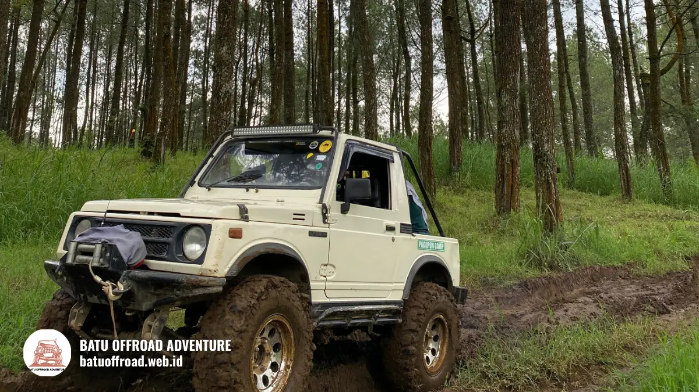

Rute dan Titik Wisata Fun Offroad Coban Talun Batu
Durasi rute fun offroad Coban Talun bervariasi menurut paket, panjang lintasan, dan jumlah titik singgah di Kota Batu. Karena operator berbeda-beda, angka pastinya harus dikonfirmasi langsung saat booking. Rute umumnya dimulai dari basecamp, melewati jalur tanah, lalu kembali ke titik awal.
Ringkasan Rute & Karakter Lintasan
- Rute fun offroad Coban Talun umumnya berbentuk perjalanan pergi-pulang dari basecamp operator.
- Titik singgah dipilih untuk pemandangan, istirahat, dan berfoto.
- Kondisi jalur berubah menurut musim: berdebu saat kemarau, licin saat hujan.
- Operator dapat menyesuaikan rute demi keselamatan.
- Durasi pasti wajib dikonfirmasi ke operator.
Bagaimana Gambaran Rute Fun Offroad Coban Talun?
Gambaran rute fun offroad Coban Talun adalah lintasan jeep dari basecamp operator melewati jalur tanah dan tanjakan di kawasan pegunungan Kota Batu, kemudian singgah di beberapa titik.
Coban Talun terletak di wilayah dataran tinggi Kota Batu, sehingga medan di sekitarnya berkontur dengan tanjakan, turunan, dan tikungan. Kontur inilah yang membuat jalur cocok untuk wisata jeep.
Perjalanan biasanya terdiri dari tiga tahap. Pertama, briefing dan pengaturan penumpang di basecamp. Kedua, perjalanan menuju kawasan wisata dengan beberapa kali berhenti. Ketiga, perjalanan kembali ke basecamp. Tiap operator dapat memiliki urutan berbeda.
Tingkat kunjungan Kota Batu ikut memengaruhi kelancaran rute. Pemkot Batu mencatat 778.235 wisatawan selama libur Lebaran 2025 (ANTARA, April 2025). Pada periode ramai seperti itu, jalur dan titik singgah bisa lebih padat, sehingga waktu tempuh dapat lebih lama dari hari biasa.
Berapa lama rute fun offroad Coban Talun?
Lama rute fun offroad Coban Talun tidak seragam karena bergantung pada paket, panjang lintasan, jumlah titik singgah, dan kepadatan wisatawan pada hari tersebut.
Sebagai patokan aman, tanyakan estimasi durasi dari operator dan tambahkan waktu cadangan untuk antre di basecamp. Jangan menjadwalkan agenda lain tepat setelah jam selesai paket. Hujan atau kemacetan kawasan wisata bisa menambah waktu.
Di Mana Titik Awal dan Basecamp Fun Offroad?
Titik awal fun offroad Coban Talun adalah basecamp operator di sekitar kawasan Coban Talun, tempat peserta mendaftar ulang, briefing, dan naik jeep.
Lokasi basecamp berbeda antaroperator. Karena itu, jangan hanya mengandalkan nama kawasan. Minta pin lokasi atau alamat lengkap dari operator, lalu cek estimasi perjalanan dari penginapan Anda.
Hal yang biasanya terjadi di basecamp:
- Pendaftaran ulang dan konfirmasi paket.
- Briefing keselamatan singkat.
- Pembagian jeep dan penumpang.
- Penitipan barang yang tidak perlu dibawa.
Datanglah lebih awal dari jam keberangkatan. Keterlambatan dapat menggeser jadwal seluruh rombongan. Bila Anda datang dengan kendaraan sendiri, tanyakan ketersediaan area parkir dan apakah dikenakan biaya. Detail isi layanan di basecamp dapat dilihat pada artikel Isi Paket Fun Offroad Coban Talun.
Apa Saja Titik Singgah di Sepanjang Jalur?
Titik singgah di sepanjang jalur fun offroad Coban Talun adalah lokasi berhenti terpilih untuk beristirahat, menikmati pemandangan, dan berfoto sebelum jeep melanjutkan perjalanan.
Jenis titik singgah yang lazim ditemui pada wisata jeep pegunungan meliputi area pandang, kebun atau hamparan hijau, spot foto, dan kawasan air terjun. Nama dan jumlah titik dapat berbeda antarpaket, sehingga daftar resmi sebaiknya diminta dari operator sebelum berangkat.
Beberapa tips saat berhenti:
- Turun hanya setelah driver memberi tanda aman.
- Bawa ponsel dengan tali pengaman.
- Jaga kebersihan dan jangan meninggalkan sampah.
- Patuhi batas waktu singgah agar jadwal tetap terjaga.
- Waspada terhadap tanah licin di tepi jalur.
Titik singgah sebaiknya dinikmati dengan santai, tetapi tetap disiplin. Waktu berhenti yang terlalu lama dapat mengurangi jatah titik lain dalam paket. Karena itu, sepakati dengan rombongan sejak awal bahwa waktu foto perlu dibagi merata.
Apakah semua titik singgah selalu dikunjungi?
Tidak selalu. Operator dapat melewati atau mengganti titik singgah bila jalur tidak aman, cuaca memburuk, atau antrean di lokasi terlalu panjang. Keputusan ini biasanya diambil demi keselamatan. Wisatawan sebaiknya menanyakan kebijakan penyesuaian rute saat booking. Dengan begitu, ekspektasi Anda sesuai dengan kondisi lapangan.

Jeep melintasi rute hutan pinus Coban Talun dengan trek berlumpur khas pegunungan.
Bagaimana Kondisi Jalur Menurut Musim?
Kondisi jalur fun offroad Coban Talun berubah menurut musim: cenderung berdebu saat kemarau dan lebih licin serta berlumpur saat musim hujan.
Pada musim kemarau, jalur tanah kering menghasilkan debu. Masker, kacamata, dan pakaian tertutup sangat membantu. Pemandangan biasanya lebih jelas karena langit lebih cerah, terutama pagi hari.
Pada musim hujan, jalur lebih licin dan genangan dapat terbentuk. Operator mungkin memperlambat laju jeep, mengubah rute, atau menunda keberangkatan. Sensasi perjalanan bisa lebih menantang, tetapi risiko juga naik. Prioritaskan keselamatan di atas keinginan menyelesaikan semua titik singgah.
Tabel Perbandingan Jalur Menurut Musim
| Aspek Perbandingan | Musim Kemarau | Musim Hujan |
|---|---|---|
| Kondisi Tanah | Kering dan berdebu | Licin dan berlumpur |
| Perlengkapan Penting | Masker dan kacamata | Jas hujan dan sepatu tertutup |
| Risiko Utama | Debu mengganggu pandangan | Jalur licin dan rute berubah |
Cuaca di pegunungan dapat berubah cepat, jadi periksa prakiraan dan tanyakan kondisi jalur ke operator pada hari keberangkatan. Untuk daftar perlengkapan menghadapi kondisi tersebut, buka artikel Checklist Persiapan Fun Offroad Coban Talun Biar Aman. Gambaran umum wisatanya dan rekomendasi armada ada di Panduan Utama Jeep Offroad Batu.
Kesimpulan
Rute fun offroad Coban Talun mengikuti pola dari basecamp, melewati jalur tanah dan tanjakan, singgah di beberapa titik, lalu kembali. Durasi dan titik singgah ditentukan operator dan dapat berubah menurut musim serta kondisi lapangan.
Ringkasan Utama (Takeaways)
- Minta pin lokasi basecamp dari operator.
- Konfirmasi durasi dan daftar titik singgah.
- Siapkan perlengkapan sesuai musim.
- Beri waktu cadangan pada hari ramai.
Hubungi operator untuk memastikan rute dan jadwal terbaru sebelum Anda berangkat.
FAQ
-
Berapa lama rute fun offroad Coban Talun?
Durasinya bergantung pada paket dan operator. Faktor penentunya adalah panjang lintasan, jumlah titik singgah, dan kepadatan wisatawan. Konfirmasikan estimasi durasi dari operator sebelum memesan. -
Di mana rute fun offroad Coban Talun dimulai?
Rute dimulai dari basecamp operator di sekitar kawasan Coban Talun, Kota Batu. Lokasi basecamp berbeda-beda, jadi mintalah alamat atau pin lokasi resmi dari operator yang Anda pilih. -
Apakah rute berubah saat musim hujan?
Ya, rute dapat berubah saat musim hujan karena jalur licin dan berlumpur. Operator bisa mengganti titik singgah, memperlambat laju, atau menjadwal ulang demi keselamatan peserta.